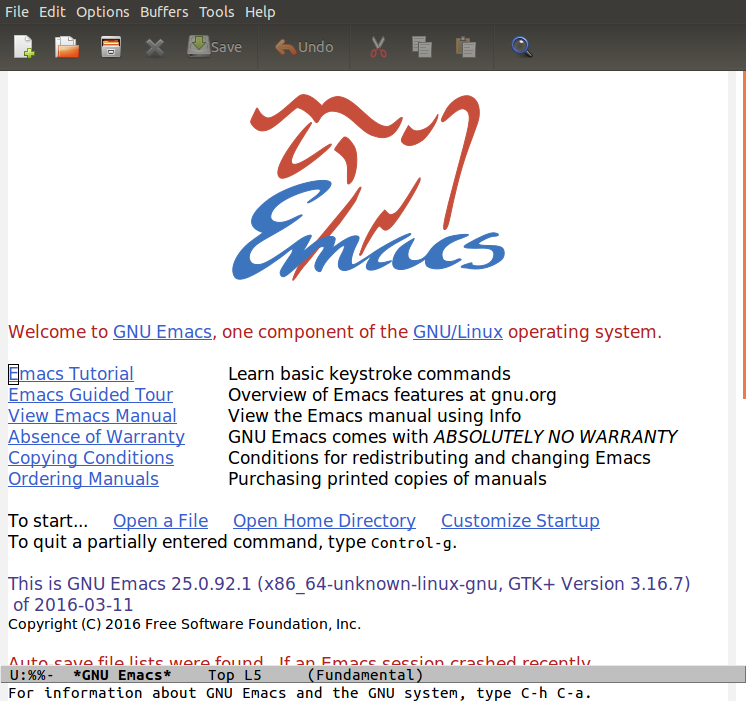
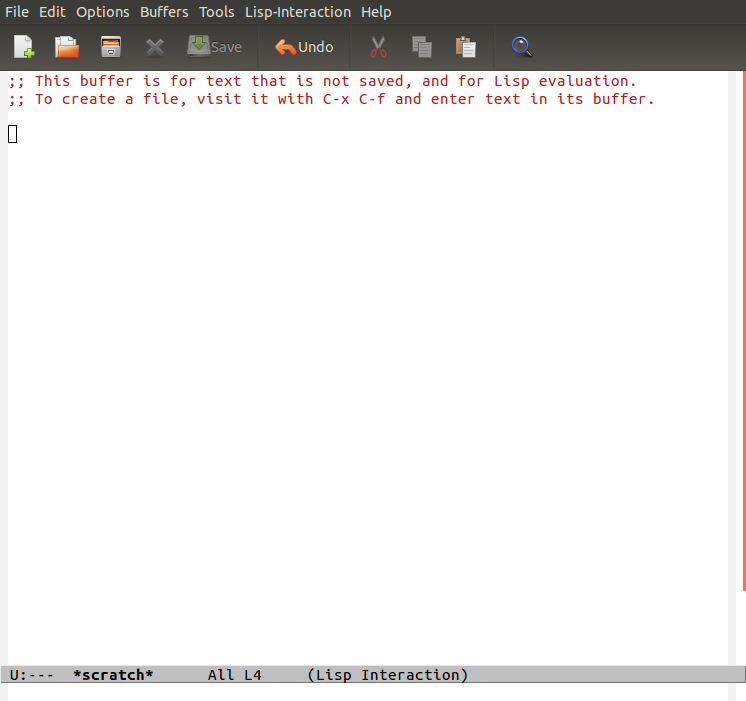

Emacs Berlin Beginners Curriculum
Table of Contents
1 Installation
How to install Emacs depends on your operating system. Make sure you install "GNU Emacs", and not an alternative version like "XEmacs" or "Aquamacs".
1.1 Windows
Windows versions of GNU Emacs are distributed as zip-files, which can be found
on gnu.org ftp mirrors. Find the zip file with the highest version number, at
time of writing this is emacs-24.5-bin-i686-mingw32.zip, and download it.
Create a directory where you want to put Emacs, for example C:\Program
Files\Emacs and unpack the zip file there.
The runemacs.exe program in the bin directory will start Emacs. The
addpm.exe program will add Emacs to the start menu.
1.2 OS X
OS X already comes with a version of Emacs installed, but it's very old (Emacs 22), and it doesn't have GUI support, so it only works inside a terminal. You want to avoid using this version.
If you have Homebrew available then that is the most straightforward option.
$ brew update $ brew install emacs --with-cocoa $ brew linkapps emacs
Alternatively you can download a .dmg at emacsformacosx.com.
That should be enough to get you going. Emacs Redux has some more tips on setting up Emacs on OS X.
1.3 Linux
Your package manager should have ready-made packages available. If you have a
graphical package manager look for an "emacs" package, or install the package
from the command line with apt-get or yum.
2 First steps
2.1 Hello, Emacs
If you've managed to install and start Emacs, you should see a screen that looks like this,

This screen isn't of great interest to us, and in fact we will disable it soon. The only thing for us to do here is find the Emacs version (look for where it says "This is GNU Emacs …"). Verify that you have version 24.5 or later.
Now you can exit this screen by pressing `q`, and you should now find yourself
in the *scratch* buffer.

Try typing this line of code
(dotimes (x 10) (insert "\nHello Emacs!"))
Now place the cursor at the end of the line, so behind the last closing
parenthesis. Press and hold the Ctrl key, and with Ctrl pressed type x
e.
Congratulations! You just wrote and executed your first piece of Emacs Lisp code.
2.2 A word about key combinations
Emacs makes heavy use of key combinations like "ctrl + g" or "alt + x". In the manual and other documentation key combinations are written using a shorthand notation. For example,
-
C-x - hold
Ctrland typex -
C-x C-e - keep
Ctrlpressed while typingxe -
C-x e - press
Ctrlandxtogether, let go ofCtrl, and presse
Besides the Ctrl key, Emacs makes heavy use of the Meta key. This is kind of
sad, because modern keyboards no longer have a Meta key. Instead the "Alt" key
is typically used as "Meta". If you're on Mac it might also be the "Cmd/⌘" key.
The Meta key (Alt or Cmd/⌘) is abbreviated with M-.
Here are some key combinations
-
M-% - search and replace
-
M-> - go to the end of the buffer
-
M-x emacs-version - check the version of your Emacs
(You don't need to memorize these commands now.)
2.3 Survival Emacs
To exit Emacs, type C-x C-c.
You can quit a partially entered command, type C-g.
To close informational "windows" like an error message or help information, type `q`
Let me repeat that
C-x C-c |
Exit Emacs |
C-g |
Quit partially typed command |
q |
Close error message |
2.4 Introduction to editing
These sections need explanation and exercises, I just listed the main commands so people have something to get started with.
| Key | Emacs command | |
|---|---|---|
C-y |
Paste | `yank` |
C-k |
Cut until the end of the line | `kill` |
C-SPC |
Start selecting text | `set-mark-comand` |
M-w |
Copy selected text | `kill-ring-save` |
C-w |
Cut selected text | `kill-region` |
2.5 Visiting files
| Key | Emacs command | |
|---|---|---|
C-x C-f |
Open File | `find-file` |
C-x C-s |
Save File | `save-buffer` |
C-x s |
Save All | `save-some-buffers` |
C-x k |
Close File | `kill-buffer` |
2.6 Switching buffers
| Key | Emacs command | |
|---|---|---|
C-x C-b |
Get a list of all open files | `list-buffers` |
C-x b |
Switch to another open file | `switch-to-buffer` |
3 First steps in Elisp
3.1 evaluating forms
TODO
3.2 values, variables, functions, setq
TODO
4 create first .emacs/init.el
4.1 A blueprint to get started
There are many ways to organize the configuration of your Emacs. We'll give you a blueprint so you have a structure that you can fill in yourself as time goes on.
Most of the extra functionality will be installed through packages. These can be installed from multiple places, we'll set things up to download packages from the two main "package repositories", GNU ELPA and MELPA.
A package may require some extra setup or configuration, such as customizing variables or creating key bindings. To keep that all in one place we'll use a command called `use-package', which is itself installed as… a package. Package-ception!
;; Install packages from these sources ;; - GNU ELPA: The official GNU package repository, relatively small ;; - MELPA: The main community-run package archive (setq package-archives '(("gnu" . "https://elpa.gnu.org/packages/") ("melpa" . "https://melpa.org/packages/"))) (package-initialize) ;; Download a list of available packages if we don't have it already (unless (file-exists-p "~/.emacs.d/elpa/archives/melpa") (package-refresh-contents)) ;; The `use-package' package makes it easy to install and configure packages (package-install 'use-package) ;; For example, (use-package multiple-cursors ;; install the package if it isn't already :ensure t ;; configure key bindings :bind (("C-S-c C-S-c" . mc/edit-lines) ("C->" . mc/mark-next-like-this) ("C-<" . mc/mark-previous-like-this) ("C-c C-<" . mc/mark-all-like-this)))
4.2 major/minor modes
4.3 get to a "good enough" initial set up
4.4 Language specific sections
For each language that you commonly program in, you should at least install a "major mode". This will provide syntax highlighting and other language-specific functionality. What follows are some example configs to get you started. Just copy over the ones that are relevant to you.
4.4.1 Ruby
There is a Ruby major mode already installed with Emacs, all you need to do is enable it
(use-package ruby-mode)
Packages you could look into in the future include
enh-ruby-moderobechrubyrspec-modeinf-ruby-mode
4.4.2 Javascript
Emacs comes bundled with a js-mode, however you might prefer js2-mode.
(use-package js2-mode :ensure t)
4.4.3 CSS
Emacs comes bundled with CSS mode. A nice extra is rainbow-mode, which shows
the color of color codes.
(use-package css-mode :config (use-package rainbow-mode :ensure t :config (add-hook 'css-mode-hook 'rainbow-mode)))
Example:
body { color: #1e1e1e; background: #3e77ff; }
4.4.4 Clojure
(use-package clojure-mode :ensure t :config (add-hook 'clojure-mode-hook 'cider-mode) ;;;; Optional: add structural editing ;; ;; (use-package paredit ;; :ensure t ;; :config ;; (add-hook 'clojure-mode-hook 'paredit-mode)) ;;; Give matching parentheses matching colors (use-package rainbow-delimiters :ensure t :config (add-hook 'clojure-mode-hook 'rainbow-delimiters-mode)) ;;; Integrated REPL environment (use-package cider :ensure t :config (use-package cider-eval-sexp-fu :ensure t) (use-package clj-refactor :ensure t :config (add-hook 'clojure-mode-hook 'clj-refactor-mode))))
4.4.5 HTML templates
Web Mode does a good job of letting you edit various HTML template files. It knows about several popular template syntaxes, so it can provide smart code highlighting.
Here's an example setup, we configure the file extensions that will use
web-mode, and set the indentation to two spaces.
Web mode provides a bunch of handy keyboard shortcuts, check the web mode website for more information.
(use-package web-mode :ensure t :config (add-to-list 'auto-mode-alist '("\\.erb$" . web-mode)) (add-to-list 'auto-mode-alist '("\\.hbs$" . web-mode)) (add-to-list 'auto-mode-alist '("\\.tmpl$" . web-mode)) (add-to-list 'auto-mode-alist '("\\.html$" . web-mode)) (setq web-mode-markup-indent-offset 2) (setq web-mode-code-indent-offset 2))
5 References
5.1 Emacsish glossary
Emacs is over 30 years old. It was developed in a time when computers took half a room, and before the rise of GUIs and desktop systems. A lot of its terminology also stems from this time, making it sound like Emacsers speak a different language.
For your convenience we have compiled a simple phrase book translation Emacsish to English.
| Emacsish | English |
|---|---|
| point | position of the cursor |
| mark | end of the selected text |
| region | selection |
| frame | window |
| window | split |
| yank | paste |
| kill | cut |
| kill ring | clipboard |
| META key | Alt key |